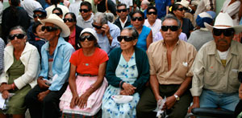

International Eye Institute, Inc.
International Eye Institute, Inc. is a private non-profit 501(c)(3) tax-exempt corporation. Our primary purpose is to provide adult and pediatric eye care and surgery to people of impoverished regions around the globe.
Our Visits
We typically are able to exceed our goals of "number of patients served" when we go on our trips. We are able to accomplish this through hard work, careful planning, organization and long days. Read more about our trips in our Newsletters.
What We Do
Virtually every year since 1991 Dr. Justin StormoGipson has led volunteer U.S. teams to Central America for a week or more of eye screening, examinations, and surgeries including, glaucoma, strabismus, cataracts, and plastic surgery.
Working twelve hour days the team will see nearly 500 patients and conduct over 150 surgeries.
Many of these patients plan for months and walk barefoot for days while others travel by bus, even crossing country borders to reach the clinic. The arrival news of the U.S. team is spread through-out the villages primarily by word-of-mouth and some limited radio announcements. The volunteers work tirelessly as a cohesive team to provide the desperately needed eye care lacking in these impoverished countries.
The real story lies in the patience, kindness and gratitude of the patients as each of them has a story of hardship.
Restoring their eyesite helps to build and sustain their community as members who were less active become more empowered and are able to contribute more to their common goals. Teams who go there to help are able gain a deeper understanding of the challenges that individuals face and bring that learning and practice home.
Minimal Overhead
Very little of the costs of the organization are spent on anything other than what it takes to organize and follow through for these trips. When you contribute to this effort, you can be sure that over 95% of your dollars will go toward providing patient care.